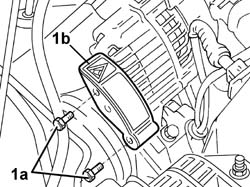
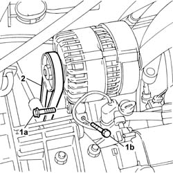
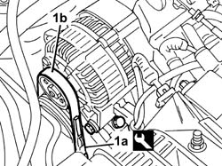

1092B68 belt from a/c compressor to alternator drive r + r
- Path
- Procedures > 10 ENGINE > 1092 ENGINE COMPONENT MISCELLANEOUS DRIVES > 1092B WATER PUMP AND ALTERNATOR DRIVE > 1092B68 belt from a/c compressor to alternator drive r + r
- Kind
- repair procedure (removal / refitting; the operation number is the code)
- Applies to
- all engines; all production periods
- Interactive page
- https://sloeber94.github.io/elrnDB-fDbl/en/#/2584325
Applies to: all engines; all production periods
 Removing
Removing
 Refitting
Refitting1. Undo the fixing bolts (1a) and remove the alternator drive belt shield (1b).

Applies to: all engines; all production periods
1. Loosen the bolts (1a) fixing the alternator to the mounting and loosen the micrometric screw (1b) for the belt tensioning device.
2. Remove the drive belt from the alternator pulley and from the compressor pulley.

Applies to: all engines; all production periods
Refitting
RemovingFit the new alternator-compressor drive belt on the respective pullies.
Rotate the alternator in an anti-clockwise direction acting on the micrometric screw to tension the belt and lock it using the fixing bolts.
1. Using tool (1a) check the belt tension (1b) is witing recommended values.
 | Name | Country |
|---|---|---|
1a | Torque wrench | 1.895.762.000 |
 | Measurement | Value | |
|---|---|---|---|
- | Alternator-compressor drive belt tension (daN) | 48 - 60 | |
New belt (-) | - | ||
| Measurement | Value | |
|---|---|---|---|
- | Alternator-compressor drive belt tension (daN) | 30 - 41 | |
Used belt (-) | - | ||

Applies to: all engines; all production periods
If the value measured is within the recommended limits, tighten the alternator fixing bolts to torque.
 | Fastening | Component | Ø | Value (daNm) |
|---|---|---|---|---|
- | Bolt | ALTERNATOR ASSEMBLY | M10 | 5 |
| Fastening | Component | Ø | Value (daNm) |
|---|---|---|---|---|
- | Bolt | ALTERNATOR ASSEMBLY | M12 | 8 |
If the reading is not within recommended limits, repeat the tightening operation.
Refit the protective cover for the alternator drive belt.
Topics that link to this page (14)
- 1016C11 single cylinder head-r r gasket for versions with air conditioner
- 1020D16 front crankshaft oil seal cover - r+r and replace gaskets for versions with airconditioner
- 1020D20 front crankshaft cover oil seal - replace for versions with air conditioner
- 1028H21 piston with connecting rod - r r
- 1032B14 TOOTHED TIMING BELT - R + R FOR TIMING ADJUSTMENT OR REPLACEMENT VERSIONS WITH AIR CONDITIONING
- 1032B47 toothed drive pulley - r r for versions with air conditioner
- 1032B53 driven toothed pulley (one) - r r for versions with air conditioner
- 1032C19 mobile timing belt tensioner - r r for versions with air conditioner
- 1088C12 water pump - r+r for versions with air conditioner
- 1092A12 crankshaft pulley - r+r for versions with air conditioner
- 1092D10 air conditioner compressor drive belt - r + r
- 5040A20 air conditioner compressor - r+r - includes fluid level check and top up if necessary
- 5530A14 alternator - r+r for versions with air conditioner
- 5530A15 ALTERNATOR - R.R. FOR VERSIONS WITH RIGHT HAND DRIVE AND AIR CONDITIONING